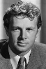
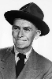
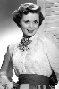

Country:United States, 77 minutes
Spoken languages:
Genres:Crime, Thriller
Director(s):Lewis Allen
Writer(s):Richard Sale
Video Codec:Unknown
Number: 1743


Certification:NR
Storyline:
The tranquility of a small town is marred only by sheriff Tod Shaw's unsuccessful courtship of widow Ellen Benson, a pacifist who can't abide guns and those who use them. But violence descends on Ellen's household willy-nilly when the U.S. President passes through town... and slightly psycho hired assassin John Baron finds the Benson home ideal for an ambush.
Cast:   

Medium: Original DVD,
Comments: Part of: Mystery Classics - 50 Movie Pack
Loaned: No
Aspect ratio: Unknown